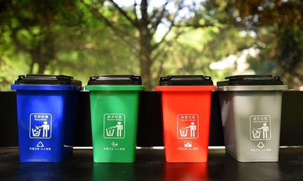

垃圾分类意义
垃圾分类是对垃圾收集处置传统方式的改革，是对垃圾进行有效处置的一种科学管理方法。 垃圾增多的原因是人们生活水平的提高、各项消费增加了。据统计，1979年全国城市垃圾的清运量是2500多万吨，1996年城市垃圾的清运费是1.16元/吨，是1979年的4倍。经过高温焚化后的垃圾虽然不会占用大量的土地，但它投资惊人，难道我们对待垃圾就束手无策了吗？办法是有的，这就是垃圾分类。垃圾分类就是在源头将垃圾分类投放，并通过分类的清运和回收使之重新变成资源。
查看详情分类细则
分而用之
分类的目的就是为了将废弃物分流处理，利用现有生产制造能力，回收利用回收品，包括物质利用和能量利用，填埋处置暂时无法利用的无用垃圾。
因地制宜
各地、各区、各社（区）、各小区地理、经济发展水平、企业回收利用废弃物的能力、居民来源、生活习惯、经济与心理承担能力等各不相同。
自觉自治
社区和居民，包括企事业单位，逐步养成“减量、循环、自觉、自治”的行为规范，创新垃圾分类处理模式，成为垃圾减量、分类、回收和利用的主力军。 查看详情
学习垃圾分类
为了正确认清四种不同的垃圾，广大网友发明了各种千奇百怪的分类方式，最著名的就是猪分类法。
也就是说，在分垃圾前要先弄清楚猪吃什么、不吃什么，最好能牵着猪扔垃圾，根据猪的反应来判断垃圾的种类。唐僧取经带上猪八戒，就是利用了……

查看详情